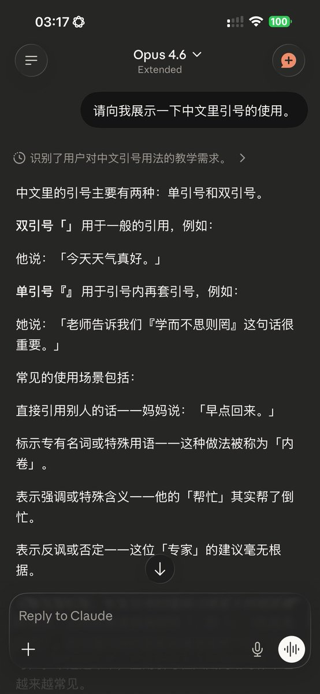
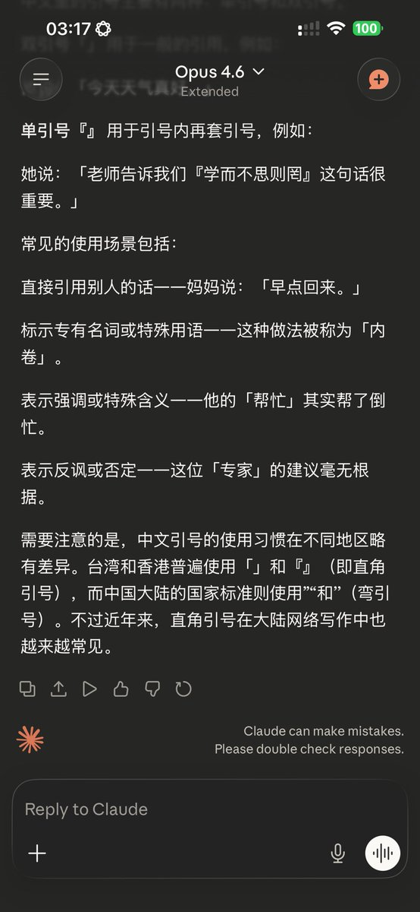

@yunwei37 嗯，后来我也猜到了，就换了一个办法解决。原本我写了具体的指导它怎么用U+2018 U+2019 U+201C U+201D的提示词也没用，于是只能改变思路了。



如果是语料级别的污染，那么就用一样的办法解决。一键到位的解决方案就是指导Claude对所有中文文本使用直角引号，效果立竿见影，除了没分清直角引号的单双引号之外（暂时懒得优化）已近完美。
我写提示词的时候参考了以下这条维基百科条目，刚好是以英语描写中文符号使用的。
https://t.co/bFWfyhQ8EP https://t.co/2rgHkPhDcj https://t.co/yAaFL1As4t
我写提示词的时候参考了以下这条维基百科条目，刚好是以英语描写中文符号使用的。
https://t.co/bFWfyhQ8EP https://t.co/2rgHkPhDcj https://t.co/yAaFL1As4t